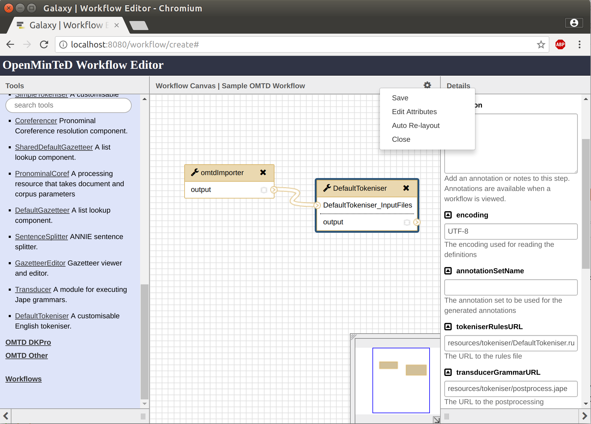

Applications in OpenMinTeD target end-users and can be used as is to perform TDM operations on content resources.
They can be
An OpenMinTeD workflow is essentially a sequence of OpenMinTeD components which are executed in order over a document or corpus (set of documents).
More specifically, OpenMinTeD workflows run over a corpus accessible via the OpenMinTeD Store and as such they all must start with the OMTD importer component. This component is responsible for retrieving the correct corpus from the Store when the workflow is executed. You do not need to specify a corpus when building the workflow, this is done automatically when the workflow is executed by the platform.
When an application is uploaded in the platform as a single component, the OMTD importer is automatically added at the time of execution.
In theory you can mix and match any OpenMinTeD components to build a workflow (normal Galaxy components are not supported), although, at this stage in the development of the platform, we advise sticking to components from one supported framework (GATE, DKPro Core, Argo, etc.).
The output of an OpenMinTeD workflow (usually UIMA CAS documents stored as XMI files in the OpenMinTeD store, but also XML, TSV, JSON etc. files, depending on the output of the final component) is accessible via the platform once a workflow execution has completed.
OpenMinTeD workflows are currently built using a version of the Galaxy workflow editor, although it should be noted that we don’t currently support standard Galaxy tools or workflows within OpenMinTeD.
Initially the workflow editor is blank because it doesn’t contain any components. The available components are listed on the left and can be added to a workflow simply by clicking on the title of the component you wish to add.
Once you have added two or more components (not forgetting that the workflow must start with the OMTD importer component), then you can link them together by linking the output of one component to the input of another using the mouse to drag the connections.

When a component is selected within the workflow editor, any configuration parameters that component may have will be displayed on the right hand side of the editor.

In many cases you do not need to provide values for all the parameters as many have appropriate defaults or the parameters can be intentionally left blank, but they do allow you to modify the standard behaviour of a component (changing which model is used etc.) should you need to. See the documentation of each component for details about their configuration parameters.
To build a workflow, go to the platform (https://services.openminted.eu), select from the top drop down menu Add the item Applications and then select the tab “Build an application with existing components” and click on “Build”.
To build a simple workflow, you must combine at least the following components:
Caution! The XMI data files that are generated in both cases use the DKPro typesystem!
Caution! For both converters you need to configure the pattern parameter (displayed in the right column) as follows: